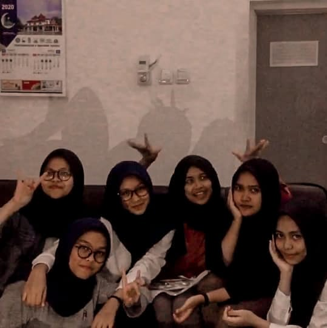

nama aku sheren, tapi temen-temen sih lebih sering manggil dengan sebutan tami. lebih simple katanya dan aku juga emang lebih suka dipanggil tami, lucu soalnya hehe. sekarang aku bersekolah di salah satu SMK ternama di Bogor. apaan tuh? yaap bener! aku bersekolah di Sekolah Menengah Analis Kimia Bogor alias SMAKBO. sekolahku agak sedikit berbeda dari SMA atau SMK pada umumnya, soalnya kita sekolah disini sampe kelas 13. wah.. lama banget kan? huhu. sekolah di SMAKBO tuh campur aduk rasanya. mau tau ga gimana caranya aku survive dari segala macem pressure di SMAKBO? selain dengan bersyukur dan selalu berdoa, ada satu hal yang bikin stress aku ilang yaitu.. kpop! hehe yaap bener aku itu kpopers garis keras. yaa meskipun akhir-akhir ini udah jarang banget fangirlingan karena tugas sekolah yang numpuk. kpop group favorit aku itu EXO. pasti kalian para non-kpopers bingung kan siapa sih EXO itu? penasaran nih? yuk langsung aja kalian kepoin disini!
gimana nih udah selesai kenalan sama EXO nya? sekarang giliran kenalan sama aku, yukk!
hmm.. tapi rasanya kenalan belum lengkap kalo kalian belum tau tentang hal-hal yang aku suka. soo now i'll tell you about my hobby (or maybe hobbies lol). aku punya banyak banget hobby, salah satunya dengerin musik. awalnya sih aku ga terlalu suka sama musik dan cuma sekedar jadi pendengar aja. tapi semenjak temen aku ngenalin ke salah satu musisi indie Indonesia, aku jadi kecanduan sama lagu-lagu mereka. kalo udah bahas tentang indie pastinya kalian tau dong siapa orangnya. yaap betul fourtwnty! selain suka dengerin musik, aku juga seneng banget baca komik haha. sebenernya aku bukan tipikal orang yang suka baca buku, apalagi buku yang isinya tulisan semua. baru liat covernya aja pasti udah pusing duluan huft.. tapi ada beberapa novel yang aku suka salah satunya karya Tere Liye. kalo aku udah suka dan tertarik sama suatu cerita, pasti bakal aku abisin hari itu juga because actually i'm easily attracted to something lmao. selain itu, aku juga suka banget baca sajak atau hal-hal lain berbau puisi. mungkin ini agak bertolak belakang sama kepribadianku yang slengean but ya semua orang pasti punya sisi yang berbeda kan di dalam dirinya dan mungkin that's my other side. anw honestly i'm not really active on social media but if you want to know more about me kindly check my instagram account ➳

next! here is my dearest friends. mereka semua merupakan sebagian kecil dari banyak orang yang udah ngisi hari-hari aku di SMAKBO. susah seneng pokoknya dilewati bareng mereka. mereka juga merupakan satu dari beberapa alasan aku masih betah di sekolah yang kejam ini hehe. temen-temen semua semoga kalian bahagia terus ya. i know it's hard tapi aku yakin kita semua bisa ngelewatin ini bareng-bareng" dan lulus bareng juga. semangaatt! <3